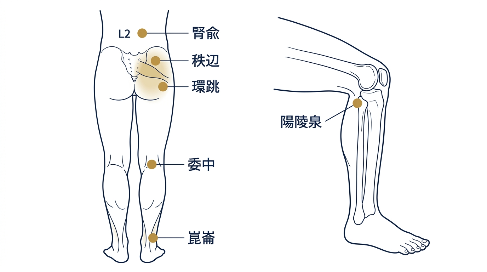

銀座そうぜん鍼灸院の臨床解説では、圧迫される神経の種類によって症状が次の5タイプに分かれることを重視しています。また、梨状筋そのもの（「川下」）だけでなく、腰椎・骨盤の傾きや下肢のバランス（「川上」）から二次的に固まるケースも多いため、全体を見極めて施術します。
| 症状パターン | 関与する神経・部位 | 主な特徴・臨床上のポイント |
|---|---|---|
| 1. 座位での殿部鈍痛 | 梨状筋単体（腰椎椎間関節関連含む） | 長く座るとお尻の奥が重だるく痛む |
| 2. お尻〜裏ももの痛み | 下殿神経・後大腿皮神経 | 坐骨神経より深層にあり自然改善しにくい。ぎっくり腰の二次症状にも |
| 3. 足全体のしびれ | 坐骨神経 | 座位や立ち上がりで裏もも〜ふくらはぎが痛む。ヘルニア等と誤認されやすい |
| 4. ふくらはぎ外側の痛み | 第5腰神経の強い圧迫 | 間欠性跛行（歩くと痛んで休むと楽）を伴うことが多い |
| 5. 陰部のしびれ・痛み | 陰部神経 | 鍼灸が効きにくいため医療機関（泌尿器科・整形外科等）の受診を強く推奨 |

| ツボ名（経穴） | 位置の目安 | 主な狙い・役割 | セルフケアの注意点 |
|---|---|---|---|
| 秩辺（ちっぺん） | 仙骨と尾骨の境目（正中）から外側約6cm、殿部深層 | 梨状筋近傍の深層除圧、殿部痛・坐骨神経痛の緩和 | しびれが強い時は強い指圧やテニスボールのゴリ押し厳禁 |
| 環跳（かんちょう） | 大転子（股関節外の骨）と仙骨下端を結ぶ線の外側1/3 | 梨状筋・深層外旋六筋の緊張緩和、股関節周囲の循環改善 | 坐骨神経直上のため強圧は避け、温め中心にとどめる |
| 陽陵泉（ようりょうせん） | 膝下の外側、出っ張った骨（腓骨頭）のすぐ前下方 | 下肢外側の筋緊張緩和、循環改善、二次的な腰痛予防 | 総腓骨神経が近いため軽めの力で3〜5秒ゆっくり |
| 委中（いちゅう） | 膝の裏側（膝窩横紋）のちょうど中央 | 腰背部の緊張緩和、ふくらはぎの引きつり・むくみ軽減 | 膝を軽く曲げて約3秒×3回。血管・神経が浅いため強圧NG |
| 腎兪（じんゆ） | へその真裏（第2腰椎下）から左右へ指幅2本外側 | 腰部・多裂筋や仙腸関節など「川上」の緊張緩和 | カイロや蒸しタオルでの温熱ケアが安全 |
| 崑崙（こんろん） | 外くるぶしの頂点とアキレス腱の間のくぼみ | 坐骨神経走行（膀胱経）に沿った後面〜腰殿部の放散痛緩和 | アキレス腱際を優しくつまむ程度（妊娠中は強刺激回避） |
| 風市（ふうし） | 直立して腕を体側に下ろした時、中指先が太もも外側に触れる点 | 腸脛靭帯・外側広筋の過緊張緩和、歩行時痛の軽減 | 手のひらでさするか軽くトントン叩く程度 |
| 足臨泣（あしりんきゅう） | 足の甲、薬指と小指の骨が交わる手前のくぼみ | 下肢外側ライン（胆経）の緊張緩和・放散痛の遠隔調整 | 痛気持ちいい範囲で軽く押圧するのみ |
| 年・研究デザイン | 対象・規模 | 主な結果と臨床的意義 | 限界・出典 |
|---|---|---|---|
| 2024年 RCT（実薬対照） | 梨状筋症候群 60名（トリガーポイント鍼30 vs ステロイド注射30） | 2・3か月後のNRS（P<0.01）・ODI（P<0.05）・股関節内旋可動域（P<0.01）・SF-36が鍼群で有意に優位、重篤な有害事象なし。 | 単施設・非盲検。Zhen Ci Yan Jiu (PMID: 39401833) |
| 2019年 RCT | 梨状筋症候群 32名（エコー下ドライニードリング vs 待機） | 3回施術後1週のVAS疼痛が待機群比で有意低下（群間差−2.16, P=.007）。 | 小規模・1週間の短期追跡。Muscle Nerve (PMID: 31415092) |
| 2026年 RCT | 梨状筋症候群 44名完了（ESWT vs エコー下DN） | 1・3か月後に両群ともVAS・ODI・LEFSが有意改善（p<0.001）、群間差なし。 | 無治療対照なし・ストレッチ併用設計。Turk J Phys Med Rehabil (PMID: 42291383) |
| 2024年 多施設RCT | 慢性坐骨神経痛 220名（中国6病院・52週追跡） | 4週時の下肢痛VAS減少は真鍼30.8mm vs 偽鍼14.9mm（差−16.0mm, P<.001）、52週後も効果持続（P<.001）。 | 椎間板ヘルニア由来坐骨神経痛が対象。JAMA Intern Med (PMID: 39401008) |
| 2023年 献体解剖研究 | 献体7体・梨状筋14筋（内側・中央・外側の刺入比較） | 中央刺入は梨状筋到達11/14・坐骨神経接触3/14と精度・安全性バランスに優れる（p<0.001）。 | 献体検証（臨床効果は別途）。J Man Manip Ther (PMID: 35658872) |
| 2015年 国内解剖・臨床検証 | 解剖3体＋健常成人30側（90mm鍼） | 大坐骨孔進入部への刺鍼で有効刺激率96.7%、有効最小深度は男性65.3±5.3mm・女性78.6±8.3mm（p<0.05）、有害事象なし。 | 健常者での深度・安全性検証。J-STAGE |
⚠ 整形外科・救急等の受診を最優先すべきサイン
排尿・排便障害（尿が出にくい・失禁）や会陰部のしびれ（馬尾症候群の疑い）、足首や足指が持ち上がらない急な筋力低下（下垂足）、安静時にも強い夜間痛・発熱・原因不明の体重減少がある場合は、直ちに専門医療機関を受診してください。